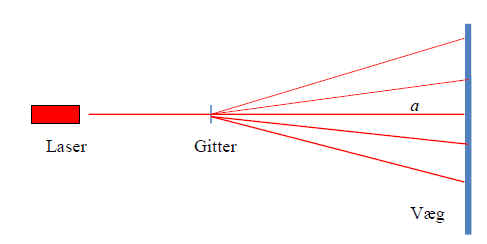
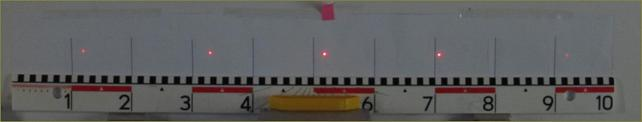
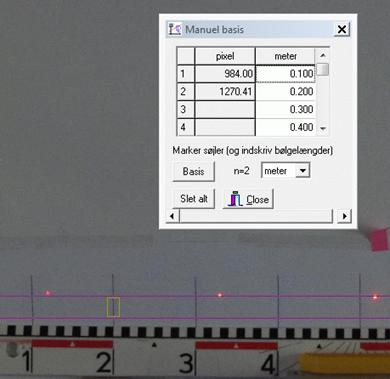
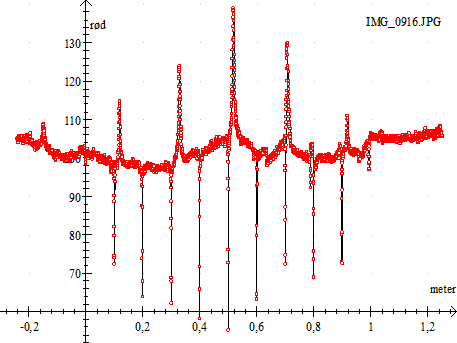
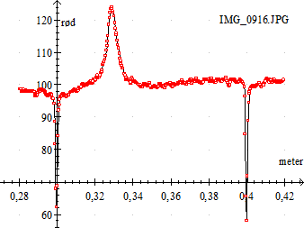

I dette forsøg benyttes en opstilling med en laser, et gitter og en væg.

Laser, gitter og eventuelt polarisationsfiltre anbringes på en optisk bænk. Gitteret sider i en drejelig holder. Så kan lyspletterne justeres til vandret, hvis gitteret ikke er monteret helt korrekt. Der skal ikke være helt mørkt i lokalet, men tusmørkt.
Hvis laseren lyser meget kraftigt, kan laserlyset dæmpes vha. to polarisationsfiltre mellem laseren og gitteret. Det kan være nødvendigt med grønne og violette laserpenne.
Lyspletterne på væggen fotograferes med et kamera anbragt bag laseren og så højt over laseren, at gitterholder ikke skygger for billedet på væggen. Kameraet indstilles til indendørs optagelse.

Der er tegnet 9 sorte streger på bagsiden af en plakat, som er sat fast på væggen. Stregtykkelsen er 1,5 punkt. Afstanden mellem stregerne er 10,0 cm. Linealen skal blot vise, at der er 10 cm mellem hver streg.
På det viste billede ses 0te orden i midten ved det røde mærke og to ordener til hver side.
Udmålingen af afstandene på væggen foregår i Datalyse.
Åben billedet i Datalyse. Vælg »Zoom-faktor« i panelet til venstre. Ellers vil billedet nok fylde mere end skærmen! Basis:Først skal pixels i billedet omregnes til afstande i meter. Dvs. der skal indlægges en basis. Vælg »meter« i panelet til venstre i Datalyse og klik på »Manuel basis«. Der fremkommer en menu, som vist nedenfor.
|
 |
Hver gang, der trækkes en ramme om en af de sorte streger, udregnes stregens pixel-position og skrives i tabellen, som vist. Man kan markere fra 2 til 8 streger. Efter endt markering klikkes på »Basis« i menuen. |
Nu skal spektret udmåles. Træk en ramme med musen om en af de røde pletter og klik på scan i menuen til venstre i Datalyse. Herefter scannes billedet i et vandret område indenfor markereringen og Datalyse beregner intensiteten af farverven rød, grøn og blå. (RGB-farverne)
Bemærk, at »Graf« i panelet til venstre bliver aktiv. Klik på »Graf« og vælg »meter« på x-aksen og »rød« på y-aksen. For en grøn laser vælges grøn og tilsvarende blå for en blå laser.
Det ovenstående billede giver følgende graf:

Toppene er lyspletterne fra laseren. »Istapperne« er de sorte streger med 10,0 cm imellem. Læg mærke til, at stregerne tydeligt ses ved 0,1 meter, 0,2 meter osv. På grafen ses nulte orden ved ca. 0,51 meter og tre ordener til venstre og 2 ordener til højre på grafen.
Træk en ramme om hver top og klik på »maximum« i panelet til venstre i Datalyse. Vælg Vis memo, her står (x, y)-værdier for hver top.
Memo:
Maximum: f(-0,1485) = 108,71
Maximum: f(0,1199) = 114,70
Maximum: f(0,3286) = 123,88
Maximum: f(0,5174) = 138,86
Maximum: f(0,7076) = 129,90
Maximum: f(0,9182) = 111,00
Kopier Memo til Excel og udregn bølgelængderne. Eks. a = 0,982 meter og n = 300 linjer/mm
|
orden |
x/ m |
afbøjning |
vinkel |
Lambda l/ m |
l gennemsnit: / m |
|
-2 |
0,1199 |
-0,3974 |
-0,3845 |
6,252E-07 |
|
|
-1 |
0,3286 |
-0,1887 |
-0,1898 |
6,290E-07 |
|
|
0 |
0,5173 |
0 |
0,0000 |
6,298E-07 |
|
|
1 |
0,7079 |
0,1906 |
0,1917 |
6,351E-07 |
|
|
2 |
0,9181 |
0,4008 |
0,3875 |
6,298E-07 |
Nøjagtigheden i forsøget afhænger af, hvor præcist de sorte streger er tegnet. Alternativt kan man markere de sorte streger efter tallene 1,2, 3… på linealen.
Man får forsøget dokumenteret bedre ved en billedanalyse end ved udmåling med målebånd og man kan se laserpletternes intensitetsfordeling. I billedet herunder har jeg zoomet ind på 1. top til venstre.

Et andet problem er så, at man ikke kan stole på oplysningen på gitteret om antal linjer pr mm!
Bestem et gitters gitterkonstant ved at benytte en laser med kendt bølgelængde
Bestem herefter bølgerlængden for laserpenne med forskellige farver.